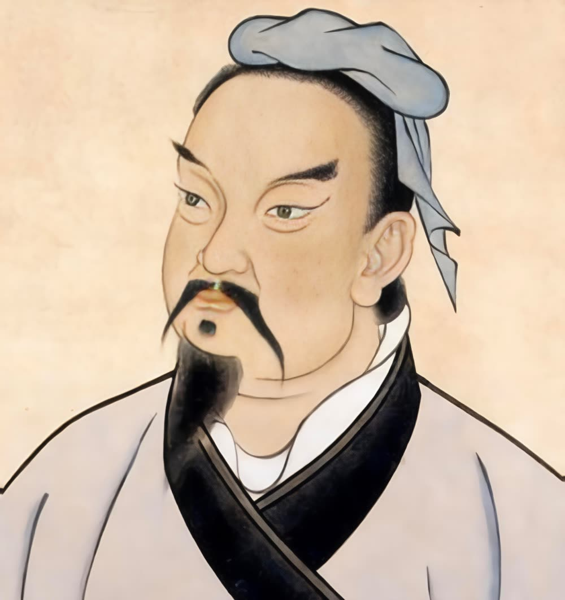

Un traité de stratégie vieux de plus de 2 000 ans, toujours d'une actualité saisissante — de la cybersécurité à la négociation, du management à la politique.
A strategic treatise more than 2,000 years old, still strikingly relevant — from cybersecurity to negotiation, management and politics.
Sun Tzu (孫子, v. 544 – v. 496 av. J.-C.), général et stratège chinois de l'État de Wu, est traditionnellement considéré comme l'auteur de L'Art de la Guerre (孫子兵法). Ce traité de 13 chapitres enseigne la connaissance de soi et de l'adversaire, le choix du terrain, la tromperie, la concentration des forces et l'art de gagner sans combattre.
Sun Tzu (孫子, c. 544 – c. 496 BCE), Chinese general and strategist of the state of Wu, is traditionally regarded as the author of The Art of War (孫子兵法). This 13-chapter treatise teaches self-knowledge and knowledge of the adversary, choice of terrain, deception, concentration of forces, and the art of winning without fighting.
Aujourd'hui, ses principes illuminent la gestion des risques cyber, la négociation raisonnée, le leadership et la stratégie politique.
Today, his principles illuminate cyber risk management, principled negotiation, leadership and political strategy.

Les idées essentielles
Core ideas of The Art of War
02GRC et risque cyber
GRC and cyber risk
03Rapport de force & valeur
Power balance & value
04Leadership & organisation
Leadership & organisation
05Alliances & contexte
Alliances & context
L'Art de la Guerre est un traité sur la stratégie, la connaissance de l'adversaire et la maîtrise du conflit. Ses principes s'appliquent à la négociation, au management, à la politique et à la gestion des risques.
The Art of War is a treatise on strategy, knowledge of the adversary and mastery of conflict. Its principles apply to negotiation, management, politics and risk management.
Le meilleur stratège gagne avant que la bataille ne commence. L'objectif n'est pas de détruire l'adversaire, mais de faire en sorte qu'il ne puisse plus atteindre son objectif.
The best strategist wins before the battle begins. The goal is not to destroy the adversary, but to make it impossible for them to achieve their objective.
Comprendre ses capacités, objectifs, contraintes, vulnérabilités, intentions et perception. Information → anticipation → décision.
Understand capabilities, objectives, constraints, vulnerabilities, intentions and perception. Information → anticipation → decision.
Paraître faible lorsqu'on est fort, proche lorsqu'on est loin. Contrôler ce que l'adversaire sait de vous.
Appear weak when strong, near when far. Control what the adversary knows about you.
Ne laisse pas l'adversaire décider où et quand. Une force inférieure peut vaincre si elle impose un environnement favorable.
Do not let the adversary decide where and when. An inferior force can win if it imposes a favourable environment.
Une victoire coûteuse peut être une mauvaise victoire. Comparer gain × coût × risque × conséquences.
A costly victory can be a bad victory. Compare expected gain × cost × risk × consequences.
Ne sois pas puissant partout : sois décisif au bon endroit et au bon moment.
Do not be strong everywhere: be decisive at the right place and the right time.
Une stratégie rigide devient prévisible. Situation → observation → adaptation → action.
A rigid strategy quickly becomes predictable. Situation → observation → adaptation → action.
Agir rapidement sur une opportunité empêche l'adversaire de s'adapter — si la préparation est solide.
Acting quickly on an opportunity prevents the adversary from adapting — if preparation is solid.
Exploite contraintes, erreurs, divisions, dépendances et excès de confiance.
Exploit constraints, errors, divisions, dependencies and overconfidence.
Ressources, communications, ravitaillement, organisation. La stratégie sans capacité d'exécution ne vaut rien.
Resources, communications, supply, organisation. Strategy without execution capability is worthless.
| Sun Tzu | Cybersécurité |
|---|---|
| Know the enemy / Connaître l'ennemi | Threat intelligence |
| Know yourself / Connaître son camp | Asset mapping / Cartographie SI |
| Choose the ground / Choisir le terrain | Reduce attack surface / Réduire surface d'attaque |
| Concentrate forces / Concentrer | Prioritise critical risks / Prioriser risques critiques |
| Deceive / Tromper | Deception / honeypots |
| Anticipate / Anticiper | Threat modeling / EBIOS RM |
| Avoid fighting / Éviter le combat | Prevention & resilience / Prévention & résilience |
| Adapt / S'adapter | Incident response / Réponse à incident |
| Logistics / Logistique | BCP/DRP, backups / PCA/PRA, sauvegardes |
| Victory without fighting | Prevent the incident / Empêcher l'incident |
Transposition vers l'Enterprise Risk Management / Cyber Risk Management. L'idée centrale : passer de « combattre les menaces » à « façonner le risque pour que l'adversaire ne puisse pas produire l'effet recherché ».
A transposition to Enterprise Risk Management / Cyber Risk Management. The core idea: move from “fighting threats” to “shaping risk so that the adversary cannot produce the desired effect”.
| Sun Tzu | Stratégie du risque | |
|---|---|---|
| Know your enemy | Identifier menaces, scénarios, motivations | Identify threats, scenarios, motivations |
| Know yourself | Actifs, dépendances, vulnérabilités, résilience | Assets, dependencies, vulnerabilities, resilience |
| Choose the ground | Réduire l'exposition, accepter ou transférer | Reduce exposure, accept or transfer risk |
| Avoid fighting | Éviter les scénarios inacceptables | Avoid unacceptable risk scenarios |
| Concentrate forces | Investir sur les risques prioritaires | Invest in priority risks |
| Deceive the adversary | Réduire les infos exploitables, cyberdéception | Reduce exploitable info, cyber deception |
| Be unpredictable | Éviter les contrôles prévisibles, tester | Avoid predictable controls, test regularly |
| Use adversary's forces | Transformer contraintes en leviers | Turn constraints into resilience levers |
| Adapt | Actualiser l'analyse du risque | Continuously update risk analysis |
| Win without fighting | Empêcher l'impact majeur | Prevent major impact |
La gestion classique demande : « Quels contrôles mettre en place ? » L'approche Sun Tzu demande : « Quel événement pourrait réellement nous mettre en difficulté, et comment faire pour qu'il n'atteigne pas son objectif ? »
Classical management asks: “What controls should we put in place?” The Sun Tzu approach asks: “What event could really put us in difficulty, and how can we prevent it from achieving its objective?”
Approche traditionnelle : « Protéger Active Directory » → MFA, segmentation, PAM… Raisonnement en contrôles.
Traditional approach: “Protect Active Directory” → MFA, segmentation, PAM… Control-centric reasoning.
Approche Sun Tzu : Quel scénario stratégique empêcher ? Ex. : Ransomware → compte privilégié → propagation → indisponibilité → interruption des paiements. On agit sur : Empêcher → détecter → contenir → résister → restaurer → continuer.
Sun Tzu approach: Which strategic scenario to prevent? E.g.: Ransomware → privileged account → propagation → unavailability → payment interruption. Act on: Prevent → detect → contain → resist → restore → continue.
La stratégie du risque consiste moins à supprimer toutes les menaces qu'à empêcher les scénarios critiques d'atteindre leurs objectifs. Risk strategy is less about eliminating all threats than about preventing critical scenarios from achieving their objectives.
Sun Tzu ajoute : « Où intervenir pour modifier le rapport de force avec le minimum de ressources ? » 100 vulnérabilités, mais seulement 5 chemins critiques → concentrer les ressources sur ces 5.
Sun Tzu adds: “Where should I intervene to change the balance of power with minimum resources?” 100 vulnerabilities, but only 5 critical paths → concentrate resources on those 5.
| Question stratégique | Strategic question | Question GRC | GRC question |
|---|---|---|---|
| Qui est l'adversaire ? | Who is the adversary? | Quelle source de risque ? | What risk source? |
| Que veut-il obtenir ? | What does he want? | Quel objectif / impact ? | What objective / impact? |
| Que protégeons-nous ? | What do we protect? | Quelles valeurs métier ? | What business values? |
| Où sommes-nous faibles ? | Where are we weak? | Vulnérabilités / dépendances | Vulnerabilities / dependencies |
| Où agir ? | Where to act? | Quelles barrières ? | What barriers? |
| Où concentrer ? | Where to concentrate? | Risques prioritaires | Priority risks |
| Si une barrière tombe ? | If a barrier falls? | Quelle résilience ? | What resilience? |
| Comment réagir à l'imprévu ? | How to react to the unexpected? | Capacité de réponse | Response capability |
| Gagner sans combattre ? | Win without fighting? | Rendre le scénario inopérant | Make the scenario inoperative |
« Guerre » = gestion d'un rapport de force, non manipulation. Ne pas écraser l'autre, mais construire une situation où un accord devient préférable au conflit pour les deux parties.
“War” = managing a balance of power, not manipulation. Do not crush the other party, but build a situation in which agreement becomes preferable to conflict for both sides.
| Sun Tzu | Négociation | Negotiation |
|---|---|---|
| Know your enemy | Intérêts, contraintes, objectifs de l'autre | Interests, constraints, objectives of the other |
| Know yourself | Objectifs, limites, alternatives, pouvoir réel (BATNA) | Objectives, limits, alternatives, real power (BATNA) |
| Choose the ground | Lieu, moment, format, personnes | Place, time, format, people present |
| Do not fight unnecessarily | Ne transforme pas chaque désaccord en confrontation | Do not turn every disagreement into confrontation |
| Concentrate forces | Les 1–2 points réellement décisifs | The 1–2 truly decisive points |
| Do not reveal everything | BATNA, prix minimum, contraintes | BATNA, minimum price, constraints |
| Use information | Pose plus de questions que tu ne donnes d'infos | Ask more questions than you give information |
| Be adaptable | Change selon les réactions | Change strategy according to reactions |
| Avoid rigid positions | Négocie les intérêts, pas les positions | Negotiate interests, not positions |
| Win without fighting | Accord = meilleure option pour l'autre | Make agreement the best option for the other |
1. Connais ton adversaire — Qu'est-ce qui est important pour lui ? Objectif, contraintes, calendrier, alternatives, urgence, qui décide.
1. Know your adversary — What is important to them? Objective, constraints, timeline, alternatives, urgency, who decides.
2. Connais-toi toi-même — Idéal → acceptable → limite → alternative (BATNA). Sans alternative, le pouvoir est faible.
2. Know yourself — Ideal → acceptable → limit → alternative (BATNA). Without an alternative, power is weak.
3. Choisis le terrain — Déplacer le cadre : « Avant le prix, regardons le périmètre et les résultats attendus. »
3. Choose the ground — Shift the frame: “Before price, let’s look at scope and expected results.”
4. Ne négocie pas contre toi-même — ❌ « Je demande 80k, mais je pourrais accepter 72k. » → « Je me situe autour de 80k. » Puis silence.
4. Do not negotiate against yourself — ❌ “I ask 80k, but I could accept 72k.” → “I am around 80k.” Then silence.
5. Position → intérêt — « Nous ne pouvons pas dépasser 65k. » → « Qu'est-ce qui vous empêche ? » → explorer variable, prime, télétravail…
5. Position → interest — “We cannot go beyond 65k.” → “What prevents you?” → explore variable, bonus, remote work…
Un bon manager ne gagne pas parce qu'il commande plus fort. Il gagne parce qu'il crée les conditions permettant à son équipe de réussir.
A good manager does not win because he commands louder. He wins because he creates the conditions that allow his team to succeed.
| Sun Tzu | Management | |
|---|---|---|
| Know yourself | Forces, faiblesses, biais, limites | Strengths, weaknesses, biases, limits |
| Know the adversary | Marché, concurrents, parties prenantes | Market, competitors, stakeholders |
| Know your army | Compétences, motivations, limites de l'équipe | Skills, motivations, team limits |
| Choose the ground | Environnement de travail favorable | Favourable working environment |
| Concentrate forces | Prioriser : tout ne peut pas être urgent | Prioritise: not everything can be urgent |
| Avoid useless battles | Éliminer conflits et réunions sans valeur | Eliminate valueless conflicts and meetings |
| Clear objectives | L'équipe doit savoir ce qu'elle vise | The team must know what it is aiming for |
| Be adaptable | Modifier le plan si la situation change | Change the plan when the situation changes |
| Use information | Décider sur des faits, signaux faibles | Decide from facts, weak signals |
| Win without fighting | Résoudre avant que cela devienne crise | Resolve before it becomes a crisis |
En politique, comme à la guerre, celui qui maîtrise le contexte peut avoir moins besoin de maîtriser la force.
In politics, as in war, the one who masters the context may need less to master force.
| Sun Tzu | Application politique | Political application |
|---|---|---|
| Know your adversary | Intérêts, électeurs, contraintes, alliances | Interests, voters, constraints, alliances |
| Know yourself | Électorat, ressources, limites, divisions | Electorate, resources, limits, divisions |
| Choose the ground | Définir les sujets du débat | Define the subjects of debate |
| Choose the moment | Quand proposer, négocier, se positionner | When to propose, negotiate, take a position |
| Concentrate forces | Ne pas disperser le capital politique | Do not disperse political capital |
| Form alliances | Coalitions autour d'intérêts communs | Coalitions around common interests |
| Master information | Connu, inconnu, contesté | Known, unknown, contested |
| Be adaptable | Ajuster quand le contexte évolue | Adjust when the context evolves |
| Avoid useless battles | Ne pas tout transformer en confrontation | Do not turn every disagreement into confrontation |
| Win without fighting | Compromis ou décision sans confrontation ouverte | Compromise or decision without open confrontation |